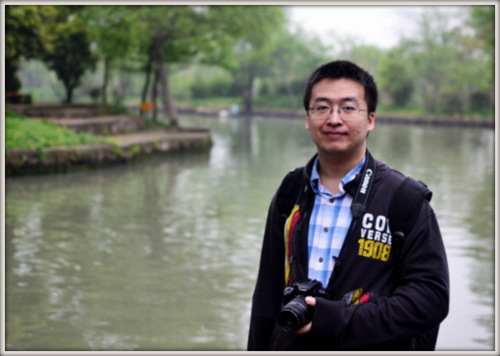

Welcome to Guangchao Geng's homepage!
Guangchao Geng is a Ph.D. candidate of the College of Electrical Engineering at Zhejiang University, China. He received his B.S. with Chu Kochen Honor in Zhejiang Univerisity, China, in 2009. His advisor is Dr. Quanyuan Jiang. From 2012 to 2013, he was a visiting Ph.D. student in the Department of Electrical Engineering at Iowa State University, United States, sponsored by the joint Ph.D. program from China Scholarship Council, collaborating with Dr. V.Ajjarapu.
Currently, he is working as graduate research assistant and pursuing his Ph.D. at Zhejiang University, China. He is expected to graduate and enter job market in June 2014.
His research interests include power system stability and control, numerical analysis and optimization, and high performance computing.
He is looking for postdoc/faculty positions at universities in Mainland China. Please contact me for my complete Curriculum Vitae.
Contact Information: Room 203, No.2 Academic Building, College of Electrical Engineering, Yuquan Campus, Zhejiang University, Zheda Road #38, Hangzhou, Zhejiang 310027, China.
Email: ggc[at]zju[dot]edu[dot]cn
Website: www.genggc.org